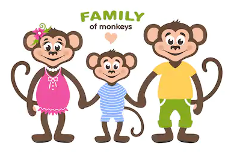

Monkatown is in Argentina, South America. Many populations of monkeys live there. The biggest jungle in Monkatown is called Monkatown Jungle - or Mungle, for short.
The Mungle is very green. The monkeys all over Monkatown cook by fires. They cook beetles, banana pancakes, coconut bacon, and ladybug sugar.
Please attend to the Monkatown Day Carnival! We hope you have fun at it. They have lots of fun games including Guess Which Coconut The Rock Is Under, Vine Swings, and Banana Cream Pie Toss. They also have snacks like popbeetles and motton candy.
Monkatown is a very happy place. They have a good leader, Mayor Mike, who makes sure that all the monkeys of Monkatown have clean bathing ponds, safe gondola roads, healhy jungle air to breathe, and healthy food.